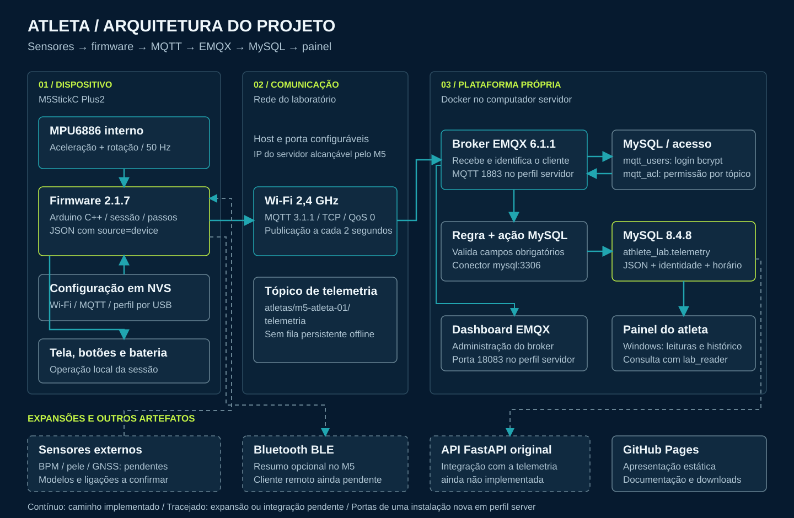
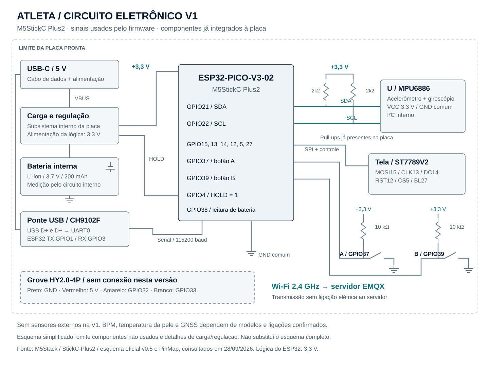
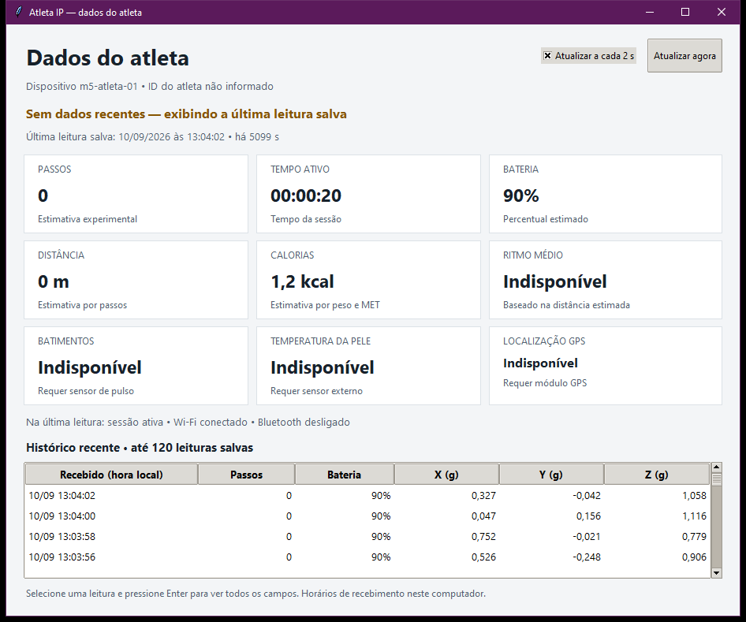

Movimento e bateria
Aceleração em três eixos, rotação, tensão da bateria e sinal Wi-Fi.
Conceito visual: BPM, SpO₂, temperatura e aplicativo móvel mostrados na arte são expansões futuras. O protótipo atual mede movimento e apresenta dados no painel Windows.
Conheça o sistemaO ATLETA usa um dispositivo no pulso para registrar movimento, acompanhar uma sessão e enviar as leituras à plataforma própria do projeto.
O M5StickC Plus2 coleta aceleração e rotação com seu sensor interno. O firmware calcula passos experimentais e envia mensagens pelo Wi-Fi. O broker EMQX recebe os dados, aplica as permissões e os grava no MySQL. O painel Windows permite consultar as leituras e o histórico.
Aceleração em três eixos, rotação, tensão da bateria e sinal Wi-Fi.
Tempo ativo, pausa e retomada, passos experimentais e estimativas a partir do perfil.
Autenticação, autorização por tópico e gravação do JSON com identidade e horário de recepção.
A placa publica; a plataforma recebe, armazena e apresenta.

Plataforma própria. EMQX 6.1.1 e MySQL 8.4.8 executam em containers Docker no computador servidor.
GitPage. Esta página apresenta o projeto e os arquivos. A consulta ao banco acontece no painel Windows.
Dados identificados. Leituras físicas usam source=device. Mensagens de teste usam source=test.
Arduino C++ · PlatformIO · MQTT 3.1.1 · firmware 2.1.7
O relógio usa o MPU6886 integrado para ler aceleração e rotação a 50 Hz. A versão 2.1.7 filtra o movimento, confirma sequências de passos e usa o giroscópio para reduzir contagens durante o manuseio. Tela, botões, bateria e Wi-Fi funcionam na placa; sensores fisiológicos externos ainda não estão integrados.
Abra o painel Windows com Docker instalado. Habilite a conexão do M5 pela rede e inicie EMQX e MySQL.
Use o firmware incluído e envie por USB a rede Wi-Fi, o endereço do servidor e a credencial MQTT gerada pela plataforma.
Veja o cliente conectado no EMQX e confira as últimas leituras em “Ver dados do atleta”. Os horários devem avançar.
O IP e as credenciais são configuráveis por USB e ficam salvos na placa. O pacote acompanha código, imagem compilada e instruções completas.
atletas/lab-teste-01/telemetria
{
"schema_version": 1,
"source": "test",
"boot_id": "exemplo-sintetico",
"sample_seq": 0,
"uptime_ms": 2000,
"accel_x_g": 0.125,
"accel_y_g": -0.25,
"accel_z_g": 0.98,
"battery_mv": null,
"wifi_rssi_dbm": null
}Esta versão usa QoS 0, sem TLS e sem fila persistente de amostras offline. A confirmação de gravação é feita no banco.
Sensor, tela, bateria e botões já estão integrados ao M5StickC Plus2.

Uma placa M5StickC Plus2, pulseira e cabo USB-C de dados. A comunicação com o servidor acontece pela rede Wi-Fi de 2,4 GHz.
O MPU6886 usa o I²C interno: SDA no GPIO21 e SCL no GPIO22. Os componentes desenhados já fazem parte da placa.
BPM, temperatura da pele e GPS dependem da identificação dos módulos e de suas ligações. O Grove fica sem conexão nesta versão.
Referência: pinagem oficial M5Stack e esquema eletrônico do fabricante.
Painel Windows 1.5.0 · interface implementada nesta primeira versão
O painel inicia a plataforma, configura o M5 por USB e consulta as leituras gravadas no MySQL.
Inicie EMQX e MySQL pelo programa, com Docker Desktop instalado.
Envie por USB a rede Wi-Fi e o endereço do servidor. Depois da confirmação, as leituras chegam sem cabo.
Consulte passos, duração, sensores e histórico. A interface indica quando há dados novos ou uma leitura antiga.

Distância e calorias dependem do perfil informado. A primeira entrega possui um programa Windows; o aplicativo móvel ilustrado no banner é uma expansão planejada.
Resultados registrados no laboratório em 02/10/2026.
Mensagens físicas chegaram por Wi-Fi ao banco. Persistência, autenticação, autorização e deduplicação possuem evidências no projeto.
Captura do sensor recebida pelo MQTT/MySQL, sem mudança de sessão ou linha malformada. Foram observadas cinco lacunas de transmissão após o último passo registrado.
Uma caminhada no espaço pequeno registrou três passos a menos. Colocar e manusear o relógio não acrescentou passos nesse teste. A precisão geral ainda precisa de mais ensaios.
Passos usam um detector experimental. Distância e calorias dependem do comprimento de um passo, peso e intensidade MET informados; sem esses dados, o firmware envia valores indisponíveis.
BPM, temperatura da pele e coordenadas GPS permanecem null com estados explícitos de sensor não configurado. A precisão em atividade real, a autonomia e o cliente BLE remoto ainda precisam de ensaios.
Os resultados acima são históricos. Esta página não indica conexão ao vivo com o dispositivo.
Projeto Integrador 6 · primeira entrega da N1
Código, documentação e visuais organizados na mesma versão.
Entrega N1: GitPage com Home, Plataforma, Dispositivos e Aplicativo; firmware com MQTT e MySQL; diagrama completo; banner e circuito. Os pacotes acompanham o firmware 2.1.7 e suas instruções.